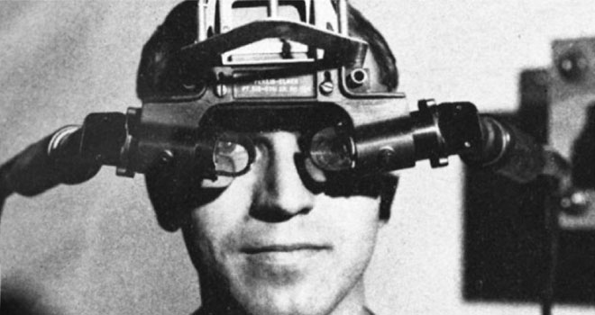
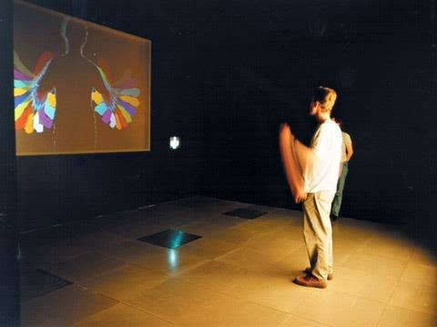
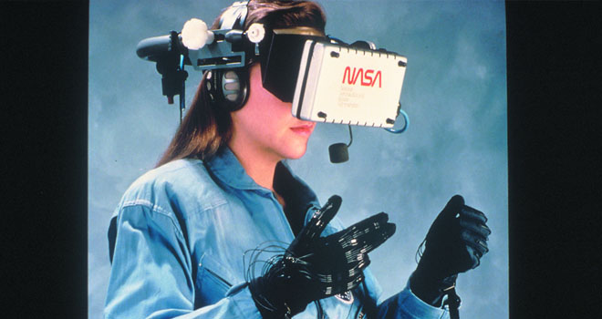

Timeline
1968 - Sword of Damocles
Ivan Sutherland was credited to have created the first augmented reality headset. He was a computer science professor at the University of Utah in the late 1960s.

1975 - VIDEOPLACE
Krueger's VIDEOPLACE was the first interactive VR platform. It featured the latest computer graphics, projectors, cameras, displays, and position-sensing technology. VIDEOPLACE consisted of dark rooms with large video screens to immerse the user.

1989 - VIEW (Virtual Environment Workstation Project)
VIEW was a VR training simulator for astronauts. Scott Foster founded Crystal River Engineering after receiving the contract from NASA.

1995 - Virtual Boy released by Nintendo
Nintendo launched the Virtual Boy console that played 3D videogames in monochrome red. It was the first portable console to display 3D graphics. It was a commercial failure.
2010 - Prototype of Oculus Rift created
Palmer Luckey created the first prototype of the Oculus Rift. It featured 90-degree field of view. He was 18 years old.
2012 - Oculus Rift Kickstarter achieves 2.4 million in funding
Palmer launched a kickstarter for the Oculus Rift which raised a resounding $2.4 million dollars. The goal was $250 thousand.
2014 - Facebook buys the Oculus VR company; immense hype
Facebook purchases the Oculus VR company for $2 billion.
Sony announces Project Morpheus, a VR headset for the PlayStation 4.
Google releases the Cardboard. It is literally a headset made of cardboard for your smartphone.
Samsung announces the Samsung Gear VR, a headset which uses a Samsung Galaxy smartphone.
2017 - Next big thing
A large majority of big tech companies were developing their own VR headsets. This includes Amazon, Microsoft, Sony, Samsung, Apple, Google, HTC, etc.
2019 - Oculus Quest releases
Oculus Quest, Facebook's standalone headset, creates a lot of interest and momentum in the industry.
2020 - Quest 2 releases
The Quest 2 unveils during the Facebook Connect 7 event. It's a massive commercial success.
2021 - Pico launches Pico Neo 3 - Competitor to Quest 2
The Chinese company ByteDance, which owns TikTok, acquired Pico.
2023 - Apple Vision Pro announced; Quest 3 releases
Apple announces its entry into the VR market with the Apple Vision Pro. The headset retailed at $3,499.
Meta released the Quest 3 the same year. It features significant advancements in display quality, processing power, and tracking. It released at a price point of $499.
2025 - Galaxy XR releases
Samsung releases the Galaxy XR. It retailed starting from $1,799.
Steam announces the Steam Frame.
2026 - Steam Frame releases
Steam releases the Steam Frame. It retails at $1,059.